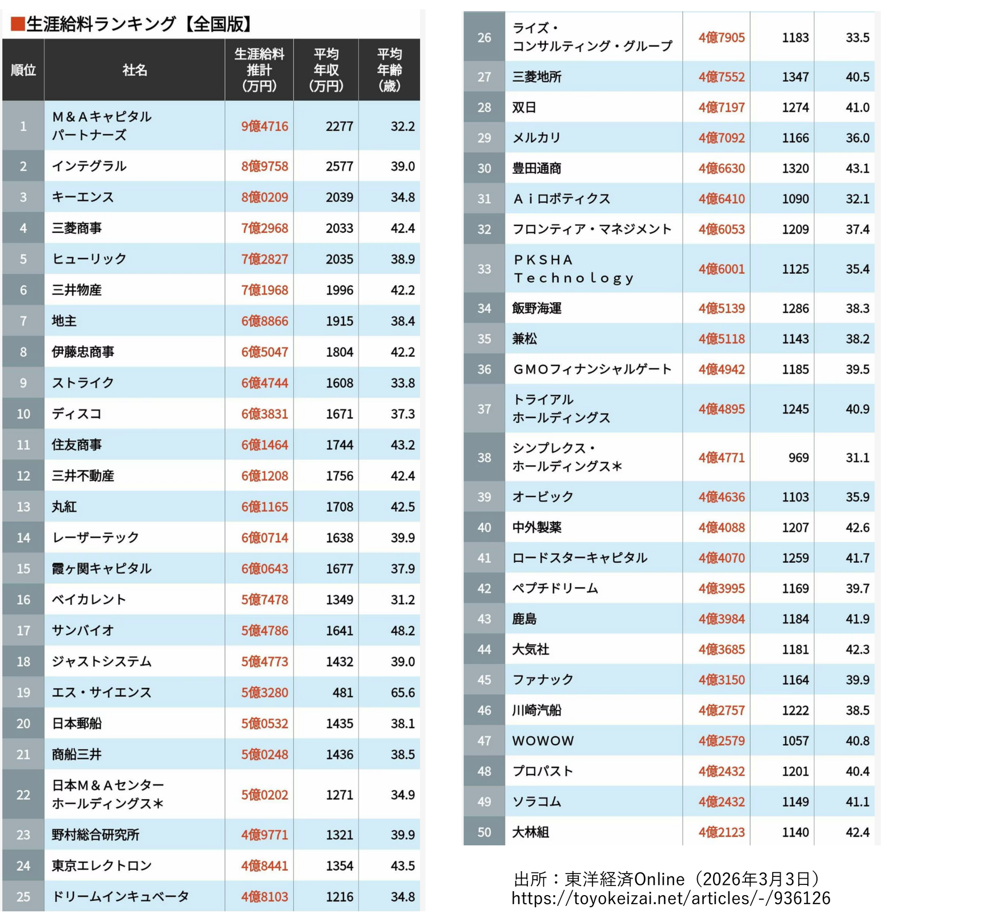
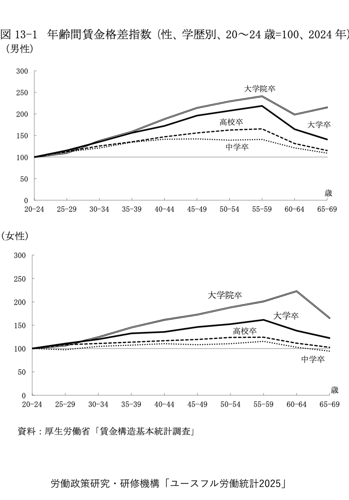
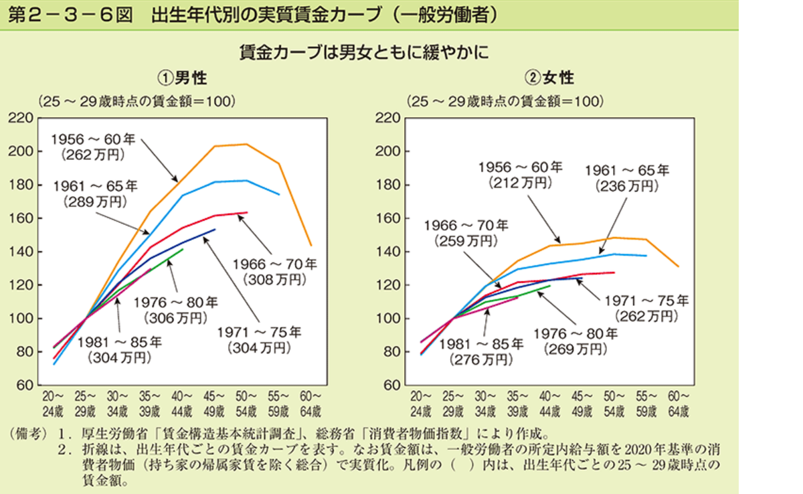

労働経済論 第6回 補助教材
長期雇用と年功賃金 丸わかり
正社員の給料はどう決まる？ — 生涯賃金・割引現在価値・「後払い」としての年功賃金
INTRO賃金の決まり方
前回は、アルバイトの時給がどのように決まるかを学んだ。短期的な雇用関係では、労働の需要と供給が一致する点として、相場の賃金（均衡賃金）が決まる。短期間だけ働くアルバイトの時給は、この相場に沿って設定するしかなく、それ以外の選択肢は実質的にない。
では、視点を変えてみよう。あなたが会社を経営して社員を雇用するとする。新入社員から定年まで働く可能性がある正社員の給料は、どう決めればよいだろうか。短期の相場どおりに毎月の給料を決めればよい、という話では済まない。今回は、この長期雇用における賃金の決まり方を考える。
話し合い 0
目安：3 分
そもそも「正社員」とは、どのような働き方だろうか。正社員ではない働き方（アルバイト・派遣・契約社員など）と何が違うのか、周りの 3〜4 人で挙げてみよう。
考えるヒント
・契約期間に「定め」があるか、ないか
・雇い主と直接の契約か、それとも別の会社から派遣されているか
・労働時間はフルタイムか、短時間か
・「いつまで働けるか」の見通しはどう違うか
本日のゴール
- G1正社員を特徴づける無期・直接・フルタイムの 3 条件を説明し、無期雇用が実際には「定年まで・さらにその先まで」の長期的な関係になりうることを理解する
- G2生涯賃金の意味を説明し、同じ総額でもいつ受け取るかで労働者にとっての価値が変わることを指摘できる
- G3利子率 $r$ と割引因子 $\delta = 1/(1+r)$ を使って、将来受け取る金額の現在価値を計算できる
- G4年功賃金が実質的な「後払い」であることを理解し、企業が後払いを望む理由・労働者が受け入れた理由を説明できる
STEP 1正社員と長期雇用
「正社員」に法律上の定義はない
意外に思うかもしれないが、「正社員」という言葉に法律上の明確な定義はない。専門家の間では、次の 3 条件を満たす働き方を指すことが多い。
- 無期：雇用契約に期間の定めがない
- 直接：働く会社と直接に雇用契約を結んでいる（派遣などではない）
- フルタイム：その会社の所定労働時間をフルに働く
ただし企業の現場では、「正社員」は多様な使われ方をする言葉でもある。たとえば 「短時間正社員」 のように、フルタイムでなくても正社員として扱う制度もある。
「無期雇用」とは、実際には何を意味するか
無期雇用とは、本来はいつでも・どちら側からでも辞められる契約である。期間の定めがないからこそ、いつでも解約を申し入れられる。実際に民法にそう書かれている。
民法 第627条
期間の定めのない雇用は、各当事者がいつでも解約の申入れをすることができ、申入れの日から2 週間を経過すると終了する（第 1 項）。つまり「無期」とは「ずっと辞められない」という意味ではない。
しかし現在の運用では、契約した仕事がある限り、またその仕事を本人がこなせる限り、定年まで働き続けてもらうのが一般的だ。結果として、無期雇用は非常に長い関係になる。
どれくらい長い関係になりうるか
- 大卒の 22 歳が新卒で就職すると、定年が 60 歳でも、継続雇用を含めれば 40 年を超える長期的な関係になる可能性がある
- 制度上は 65 歳までの継続雇用義務に加え、令和 3 年（2021）4 月から 70 歳までの就業機会確保（努力）義務が加わった
- これからは定年の引き上げが行われる可能性が高い
- もちろん、労働者による離職や、会社側からの解雇の可能性はある
だからこそ、正社員の賃金は「今月の相場でいくら」と一発で決まるものではない。長い時間をかけて、いくらを・いつ支払うかという配分の問題になる。これが今回の主題である。
あなたの回答
Q1
あなたが企業の経営者だとして、「短期間だけ働くアルバイト」と「定年まで働く可能性のある正社員」とでは、賃金の決め方をどう変えるべきだと思うか。違いを 2〜3 点挙げて説明しよう。
未保存
STEP 2生涯賃金
長期雇用における賃金を考える前に、まず生涯賃金を見てみよう。生涯賃金とは、ひとりの労働者が生涯にわたって得る賃金の総額のことである。
生涯賃金はどのくらいか（JILPT の推計）
労働政策研究・研修機構（JILPT）の「ユースフル労働統計 2025」（2024 年のデータ）による推計を見る。前提は、フルタイムの正社員として 60 歳まで働き、退職金を受け取り、61 歳以降は平均引退年齢まで非正規で働く場合である（退職金・定年以降を含む）。
| 定年まで | 退職金 | 定年以降 | 合計 |
|---|
| 男性・高校卒 | 215.6 | 14.4 | 45.3 | 275.3 |
| 男性・大学卒 | 262.8 | 18.4 | 58.3 | 339.5 |
| 女性・高校卒 | 157.9 | 14.4 | 27.7 | 200.0 |
| 女性・大学卒 | 209.9 | 18.4 | 38.9 | 267.2 |
単位：百万円。出典：労働政策研究・研修機構「ユースフル労働統計 2025」図 21-2（引退まで・退職金を含む、2024 年）
企業によって大きく違う
生涯賃金は、勤める企業によって大きく異なる。『会社四季報』掲載の上場企業約 3,900 社（単体従業員数が 10 人未満や平均賃金の発表がない企業などを除く）を対象にした東洋経済の「生涯給料ランキング」では、次のような傾向が読み取れる。
- 最上位クラスでは、生涯給料の推計が 9 億円超に達する企業もある
- 上位 15 社くらいまでは、平均年収が 1,500 万円を超えている
- 調査対象となった上場企業の平均生涯賃金は約 2 億 4,133 万円

生涯給料ランキング【全国版】上位 50 社（順位・社名・生涯給料推計・平均年収・平均年齢）。最上位は 9 億円超、上位 15 社ほどは平均年収 1,500 万円超。出所：東洋経済オンライン（2026 年 3 月 3 日）https://toyokeizai.net/articles/-/936126
平均生涯賃金 2 億 4,133 万円は、22 歳から 60 歳までの約 38 年間の総額である。単純に 1 年あたりに割ると、
$\;2{,}4133 \div 38 \approx 635\;$（万円／年）。
ただし、この金額を毎年「均等に」受け取るわけではない。ここが今回の重要なポイントになる。
話し合い 1
目安：4 分
生涯賃金が高い企業は、どのような会社だろうか。(1) どのような業界に多いか、(2) 同じ業界でも賃金が高い会社は、どのような理由で高いのか、を話し合おう。
考えるヒント
・一人あたりが生み出す付加価値が大きい業界か？（金融・商社・専門サービスなど）
・参入障壁・専門性が高く、できる人が限られているか？
・同業界での差は、規模・収益力・労働者一人あたりの生産性の違いで説明できそうか？
あなたの回答
Q2
生涯賃金が高い企業に共通する特徴を 2〜3 点挙げ、それぞれ「需要が大きい／供給が限られる」のどちらの要因で説明できるかを書こう（第 5 回の枠組みを使ってよい）。
未保存
同じ総額でも「いつ受け取るか」で価値が変わる
生涯賃金が同じ金額（たとえば 2 億円）でも、いつ受け取るのかによって、労働者にとっての価値は異なる。約 38 年（22〜60 歳）の働き方として、次の 3 つの受け取り方を比べてみよう。いずれも名目の総額は同じ 2 億円である。
| パターン | 受け取り方 | 名目の総額 |
|---|
| A（後払い型） | 最初の 30 年間は 400 万円／年、最後の 8 年間は 1,000 万円／年 | 2 億円 |
| B（均等型） | 38 年間、毎年ほぼ均等に約 526 万円／年 | 2 億円 |
| C（前払い型） | 最初の 8 年間は 1,000 万円／年、その後の 30 年間は 400 万円／年 | 2 億円 |
話し合い 2
目安：3 分
あなたなら、A・B・C のどのパターンが良いだろうか。総額は同じなのに、なぜ好みが分かれるのか考えよう。次の STEP 3 で、この違いを「割引現在価値」として数値化する。
STEP 3利子率と割引現在価値
受け取る総額が同じならば、単純に考えて若いうちに（早く）受け取るほうが価値が高い。なぜそう言えるのか。利子率と「割引」の考え方で説明できる。
今の 1 万円と、1 年後の 1 万円
「1 万円もらえるとして、今欲しいか、それとも 1 年後に欲しいか」と聞くと、ほとんどの人は「今」と答える。理由のひとつは、早く受け取って銀行に預けておけば、利子がつくからだ。
利子率を $r\;(>0)$ とする。今の 1 万円を預けると、1 年後には $(1+r)$ 万円になる。つまり、あなたにとって、
$$ \text{現在の } 1 \text{ 万円} \;=\; \text{1 年後の } (1+r) \text{ 万円} $$
が同じ価値だと考えられる。これを逆に読むと、1 年後の 1 万円は、現在の価値に直すと 1 万円より小さいということになる。
割引因子 $\delta$
「1 年後に受け取る 1 万円の、現時点での価値」を求めよう。現在の $x$ 万円が 1 年後に 1 万円になればよいので、$x(1+r)=1$、すなわち $x = \dfrac{1}{1+r}$。この
$$ \delta \;=\; \frac{1}{1+r} \qquad (0 < \delta < 1) $$
を割引因子という。1 年後の金額に $\delta$ を掛けると現在価値になり、$t$ 年後の金額には $\delta^t$ を掛ける。$r$ が大きいほど $\delta$ は小さく、将来のお金は大きく「割り引かれる」。
$n$ 年間、毎期末に 1 万円受け取る債券の現在価値
これから $n$ 年間、毎年の期末に 1 万円ずつ受け取れる債券を考える。各年の現在価値を足し合わせると、等比数列の和になる。
\begin{aligned}
PV &= \delta + \delta^2 + \delta^3 + \cdots + \delta^n \\
&= \frac{\delta\,(1-\delta^{\,n})}{1-\delta}
= \frac{1-(1+r)^{-n}}{r} \quad (\text{万円})
\end{aligned}
応用
企業の株式や不動産の価値は、こうして将来のキャッシュフローを割り引いて足し合わせる収益還元法（DCF など）で算定されることが多い。今回学ぶ割引現在価値は、金融・不動産の評価にも直結する基本的な考え方である。
割引現在価値の計算機
利子率 $r$ と年数 $n$ を動かして、割引因子 $\delta$ と、毎年 1 万円を $n$ 年間受け取る債券の現在価値を確かめよう。
割引現在価値（毎期末に 1 万円・$n$ 年間）
割引因子 $\delta$：0.971
1 年後の 1 万円の現在価値：9709 円
$n$ 年分の現在価値：22.5 万円
利子率が高いほど、また将来であるほど、現在価値は小さくなる。
3 つの受け取り方を比べる
STEP 2 の A・B・C は、名目の総額はすべて 2 億円（＝20,000 万円）だった。これを現在価値に直すと、どれが一番大きいだろうか。利子率 $r$ を動かして確かめよう。
3 パターンの生涯賃金の現在価値（名目はいずれも 2 億円）
A 後払い型：— 万円
B 均等型：— 万円
C 前払い型：— 万円
利子率が 0 より大きいとき、早く受け取る C が最も現在価値が高く、後払いの A が最も低い。
ここまでの結論：総額が同じでも、早く受け取る（前払い）ほうが現在価値は高い。逆に言えば、後払いは受け取る側にとって損になる。年功賃金は、まさにこの「後払い」の性質を持っている。にもかかわらず、日本企業ではなぜ年功賃金が広く使われてきたのか。次の STEP 4 で考える。
あなたの回答
Q3
上の計算機で利子率を 3% にしたとき、A・B・C の現在価値はそれぞれいくらになったか。数値を書き、なぜ C が最も高くなるのかを「割引」の言葉で説明しよう。
未保存
STEP 4年功賃金とは
日本企業では、年功賃金が採用されているケースが多い。年功賃金とは、勤続年数（＝年）や貢献（＝功）に応じて賃金が上昇する形態のこと。実際にはこれは「後払い」の仕組みになっている。
世界的に標準的な働き方では、その時点での貢献度に見合った賃金を、その時点で受け取るのが一般的だ。これに対し年功賃金は、若いうちは貢献度より低い賃金しか受け取らず、年齢・勤続が進むと貢献度より高い賃金を受け取る。差額をあとでまとめて受け取る点で、実質的な後払いになっている。
年功賃金の模式図。若いうちは貢献度より低い賃金（差額は会社への「貸し」）、後半は貢献度より高い賃金で回収する。
実際の年齢別の賃金は、次の図で確認できる。学歴が高いほど、また年齢（勤続）が進むほど賃金指数が高くなり、勤続とともに賃金が上昇する「年功」的なカーブが読み取れる。

図 13-1 年齢間賃金格差指数（性・学歴別、20〜24 歳 = 100、2024 年）。上が男性、下が女性。中学卒・高校卒・大学卒・大学院卒の別に、年齢階級ごとの賃金水準を指数化したもの。資料：厚生労働省「賃金構造基本統計調査」／労働政策研究・研修機構「ユースフル労働統計 2025」
経営者なら、1 年目と 2 年目にいくら払う？
単純化のために、貢献度に見合った賃金が 500 万円の労働者を雇っている企業が、2 年間で総額 1,000 万円を払うケースを考える。1 年目と 2 年目に、いくらずつ払えばよいだろうか。
| プラン | 1 年目 | 2 年目 | 総額 |
|---|
| プラン 1（均等） | 500 | 500 | 1,000 |
| プラン 2（後払い） | 400 | 600 | 1,000 |
| プラン 3（前払い） | 600 | 400 | 1,000 |
単位：万円。総額はいずれも 1,000 万円で同じ。
話し合い 3
目安：4 分
労働者は「できるだけ早く受け取りたい」と考える（STEP 3）。では、なぜ企業はあえて後払い（プラン 2 のような形）を選ぶことがあるのか。経営者の立場で、後払いの「メリット」を考えてみよう。
後払いは、基本的には「中立」のはず
単純な後払いや分割払いは、受け取る側からは利子の分だけ損なことが多い。反対に、支払う側は後払いのほうが得になる。しかし、労働者に後払いを納得してもらうには、支払う側はその分だけ多く支払わなければならない。だから、後払いそのものは基本的には中立のはずである。
それなのに、なぜ企業は後払いを望むのか。中立を超えるメリットがあるからだ。
企業が後払いを望む 3 つのメリット
- 資金繰り：企業規模が小さいうち（創業初期など）は、あまり賃金を支払わなくてすむ
- 引き止め：賃金の後払い部分は、労働者が途中で離職した場合には払わなくてよい。だから労働者は辞めにくくなる
- 規律付け：後払いがあると、不適切な行動（怠ける・問題を起こす）で解雇されると後払い分を失うため、労働者の不適切な行動を抑制できる
なぜ勤続で賃金が上がるのか：2 つの仮説
人的資本仮説
勤続年数が伸びると、仕事を覚えて活躍の度合いや貢献度そのものが向上するから、賃金も上がる、という考え方。
インセンティブ仮説
仮に貢献度が伸びなくても、離職抑制やサボり防止に効くから上昇させる、という考え方（後払いによる規律付け）。
実際のデータからは、後者（インセンティブ仮説）の効果がかなり重要なことがわかっている。年功賃金は、能力形成だけでなく、働き手を引き止め・規律づける装置として機能している。
労働者は、なぜ後払いを受け入れたのか
年功賃金や退職金の仕組みは、当初は離職抑制のために導入された。労働者の側が後払いの提案を受け入れられた理由としては、次のようなものが挙げられる。
- 企業の存続可能性が高かった：会社が将来も続くと信じられたので、後払い分を受け取れる見込みがあった
- 生活給の考え方：年齢が上がると家族が増え生活費もかさむため、後払い的に賃金が上がることが受け入れられやすかった
- 近視眼的行動へのコミットメント：双曲割引による近視眼的行動（つい目先を優先する傾向）を前提とすると、強制的に後で受け取らせる仕組みが、貯蓄の代わりとして役立つ面がある
あなたの回答
Q4
年功賃金（後払い）は労働者にとって割引の分だけ不利なはずなのに、なぜ企業はこれを採用し、労働者も受け入れてきたのか。企業側のメリットと労働者側の理由を、それぞれ 1 つ以上挙げて説明しよう。
未保存
年功賃金は「宝くじ」と「保険」
年功賃金は、労働者の成果を反映することはあっても、その差は大きくない。貢献度が 2 倍違っても、賃金は 2 倍も違わない。なぜこのような仕組みが導入されているのか。
就職する段階では、その人に適性があるかどうかを、企業側も労働者側もよく分からない。長期雇用の下での年功賃金とは、
- 企業にとっては「宝くじを買う」ようなもの：採用時にはわからないが、なかに大化けする人材がいれば、賃金を抑えつつ大きな貢献を得られる
- 労働者にとっては「保険を買う」ようなもの：もし自分の能力が高くないと後でわかっても、賃金が大きく下がらず守られる
慣行日本的雇用慣行とその変化
日本的雇用慣行の三本柱
長期雇用と年功賃金は、日本企業に特徴的な雇用慣行の一部である。社会学者ジェームズ・アベグレンは『日本の経営』（1958 年）で、日本企業の特徴として次の 3 つを挙げた。
- 定年までの長期雇用慣行
- 年功賃金
- 企業別組合
これらが成立した歴史的背景としては、長期的な経済成長による人手不足と、労働者が対応できる程度の（急すぎない）技術進歩があったと考えられる。
慣行が形成される論理（因果の連鎖）
これらの慣行は、互いに支え合う形で形成された。主な因果の流れを追うと次のようになる。
- 出発点経済成長による人手不足。熟練労働者ほど技能が高いため、企業は人材を確保・育成したい。
- 学卒者をまとめて雇用（新卒一括採用）し、採用後に社内で教育訓練を行う。
- その結果、その企業でこそ価値を発揮する企業特殊的な人的資本が蓄積され、内部労働市場を通じた適材適所が実現する。
- 育てた人材を逃したくないので、年功賃金などによる引き止め策がとられる（後払いで離職を抑制）。
- 長く勤めることで企業と労働者の利害が近づき、企業別組合が成立。これが長期雇用慣行を支える。
- 帰結転職の受け皿となる外部労働市場が未発達になり、ますます内部での長期雇用が合理的になる（慣行が自己強化される）。
スライドの「日本的雇用慣行の形成」図を、主要な因果の流れに沿って整理したもの。
年功賃金のフラット化
近年、年齢が上がっても賃金があまり増えない「フラット化」が進んでいる。下の出生年代別の賃金カーブを見ると、新しい世代ほど賃金カーブがなだらかになっていることがわかる。

第 2-3-6 図 出生年代別の実質賃金カーブ（一般労働者、25〜29 歳時点 = 100）。古い世代（1956〜60 年生まれなど）ほどカーブが急で、新しい世代ほどなだらかになっている。出典：内閣府「令和 4 年度 年次経済財政報告」 https://www5.cao.go.jp/j-j/wp/wp-je22/h06_hz020306.html
なぜ年功賃金はフラット化したのか。考えられる要因は次のとおり。
- 経済成長や企業の業績向上の鈍化：右肩上がりを前提にした後払いが維持しにくくなった
- 転職の増加：定年まで同じ会社にいる前提が崩れ、後払いの「回収」が不確実に
- 企業の永続性への懸念：会社が将来も続くとは限らず、後払いを約束しにくい
- 成果型賃金の導入：その時点の貢献に応じて払う方向への移行
あなたの回答
Q5
年功賃金がフラット化している理由を 1 つ選び、それが「後払いの仕組み（STEP 4）」とどう関係するかを説明しよう。後払いが成り立つ条件が崩れている、という観点で考えてみよう。
未保存
SUMMARYまとめと次回への課題
本日の流れ
- 賃金の決まり方：短期は相場（均衡賃金）に従う。長期雇用では、いくらを・いつ払うかという配分が問題になる
- 正社員と長期雇用：正社員＝無期・直接・フルタイム。無期雇用は、継続雇用を含めれば 40 年を超える長い関係になりうる
- 生涯賃金：一生で得る賃金の総額。企業によって大きく異なり、同じ総額でも受け取る時期で価値が変わる
- 利子率と割引現在価値：割引因子 $\delta = 1/(1+r)$。早く受け取るほど現在価値は高い。後払いは受け取る側に不利
- 年功賃金：実質的な後払い。引き止め・規律付け・資金繰りのメリットがあり、宝くじ（企業）／保険（労働者）の性質を持つ
- 日本的雇用慣行：長期雇用・年功賃金・企業別組合の三本柱。近年は賃金カーブがフラット化している
次回の予告
次回は、どのような仕事の賃金がなぜ高いのかを理解するために、補償賃金仮説と効率賃金仮説について学ぶ。
事前学習
個別の企業ではなく、業種や職種ごとに、どのような仕事の賃金が高い／低いのかを調べてみよう。次の 10 業界を、40 歳時点の平均賃金が高い順に並べてみよう。
(1) 自動車 (2) 鉄道 (3) 建設 (4) 介護 (5) 創薬ベンチャー (6) 食品 (7) 外食 (8) 化粧品 (9) 総合商社 (10) 証券
また、賃金に影響を与える要因として、学歴や勤続年数以外にどのような要因があるのかを考えてみよう。
あなたの回答
Q6
上の 10 業界を、40 歳時点の平均賃金が高いと思う順に並べ、なぜその順だと考えたかを書こう。さらに、学歴・勤続年数以外で賃金に影響しそうな要因を 2 つ以上挙げよう。
未保存
メモ
各セクションに記入した内容はブラウザ内（localStorage）に自動で保存されます。同じ端末・同じブラウザでこのページを再度開けば、続きから読み直せます。